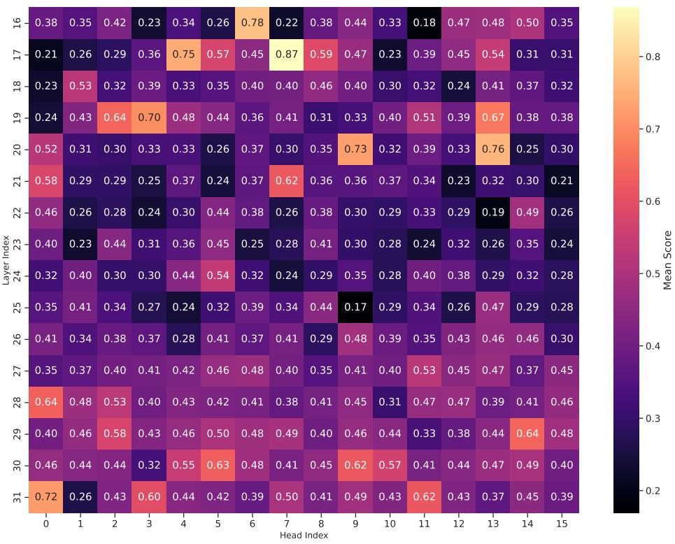

arXiv new; ECCV 2026 provisional · P2 · 2026-07-04
Towards Robustness against Typographic Attack：CLIP 是大量 VLM 的视觉自监督/对比预训练底座，这篇能帮助判断图文对齐模型什么时候在“读文字”而不是“看物体”
把 typographic attack 从现象层面推进到 CLIP ViT 组件级解释，并展示无需额外训练的注意力调整能提升鲁棒性。
编号2607.02494
优先级P2
类别arXiv new; ECCV 2026 provisional
会议arXiv new; ECCV 2026 provisional
方法训练自由的 concept localization / circuit mining：对 hidden representations 采样解释，量化 attention head 的语义焦点与文字焦点，然后直接干预被定位的组件。
来源arXiv / OpenReview
先说结论。CLIP 是大量 VLM 的视觉自监督/对比预训练底座，这篇能帮助判断图文对齐模型什么时候在“读文字”而不是“看物体”。 把 typographic attack 从现象层面推进到 CLIP ViT 组件级解释，并展示无需额外训练的注意力调整能提升鲁棒性。


核心问题
CLIP 是大量 VLM 的视觉自监督/对比预训练底座，这篇能帮助判断图文对齐模型什么时候在“读文字”而不是“看物体”。
方法拆解
训练自由的 concept localization / circuit mining：对 hidden representations 采样解释，量化 attention head 的语义焦点与文字焦点，然后直接干预被定位的组件。
主要贡献
把 typographic attack 从现象层面推进到 CLIP ViT 组件级解释，并展示无需额外训练的注意力调整能提升鲁棒性。
实验看点
在 object classification 与 RIO-Bench VQA under typographic interference 上报告多种 LVLM 视觉编码器的泛化收益。
局限与读法
防御目标很窄，且 safety-critical 示例偏应用；它不会提高基础表征的正常分布能力。